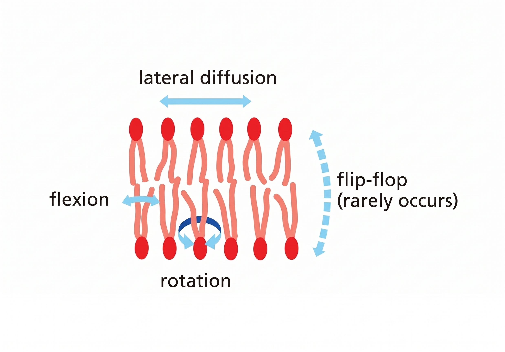
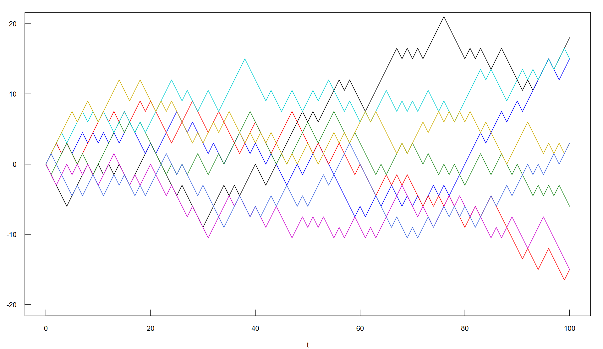

Introduction
Brownian Motion describes the limit trajectory of a point moving through equally spaced, independent steps, and it can be useful to describe phospholipid motion in erythrocyte membranes. This was observed (Lee, Ishihara and Jacobson 1991) using nanovid microscopy, which is a tracing technique using gold particles to trace the phospholipids' motion. Phospholipids' motion within the membrane plane, composed of random exchanges of position with neighbors, is what gives rise to a diffusive lateral motion (Alberts, B. 2014). We will treat the mathematical aspects of the relationship between the well-known diffusive motion of phospholipids in the cell membrane and the laboratory observation of their Brownian Motion. In particular, we will describe the relationships between the observed mean square displacement (MSD), diffusion coefficient D, and the same quantity expressed in terms of the scaling parameter σ2 of Brownian Motion.
Diabetes mellitus is a chronic condition where the body does not use insulin properly or make enough of it, causing glucose to build up in the blood. In the presence of diabetes mellitus there are some chemical reactions related to hyperglycemia and elevated cholesterol that slow down phospholipid motion along the membrane (Watala & Winocour 1992). In our analysis this is important to describe and quantify the decrease of the diffusion coefficient when patients have diabetes mellitus.
Once we have taken care of the mathematical aspects, we transfer our model to R to simulate the motion and study how diabetes impacts the First Passage Time (FPT): a random variable built to make it easier to understand the deceleration of phospholipid motion. The FPT represents the time spent by a single phospholipid to reach a fixed spatial threshold.
We will study the cell in two cases: when the cell is healthy with an ordinary diffusion coefficient and when the cell is affected by diabetes, represented by a lower diffusion coefficient. In the case when the cell is affected, we certainly expect a slower phospholipid motion; but our goal is also to quantify this difference and see how this phenomenon reflects on the FPT distribution. We will simulate the motions in order to have both distributions of FPT to see how much difference there is and to simulate a diabetes test with a p-value.
Phospholipids
Phospholipids are the principal component of the erythrocyte membrane. Essentially, they consist of three parts: a glycerol molecule, two fatty acids (forming the hydrophobic 'tails'), and a phosphate group linked to an alcohol (forming the hydrophilic 'head'). This structure allows them to adopt a specific arrangement (see Figure 1), forming a lipid bilayer with the hydrophobic tails oriented inward and the hydrophilic heads oriented outward.

The erythrocyte plasma membrane can be viewed as a two-dimensional fluid in which phospholipids move. This environment allows them to undergo essentially three types of movement:
- Rotation: molecules rotate about their longitudinal axis.
- Flexion: oscillation of the molecules' hydrocarbon tails.
- Lateral diffusion: molecules move within the plane of the fluid, exchanging positions with their neighbors.
Occasionally, they can undergo flip-flop (transverse diffusion), a rare movement in which a phospholipid migrates from one monolayer to the other.
The primary movement of interest for our model is lateral diffusion.
We aim to model the spatiotemporal evolution of a phospholipid's position using the diffusion equation.
This lateral diffusion is very rapid: each molecule exchanges places with its neighbors about 107 times per second, resulting in a diffusion coefficient
D ≈ 10−8 cm2/s (Alberts, B. 2014).
Effect of diabetes mellitus on the erythrocyte membrane
Diabetes mellitus is a condition defined by persistently high levels of glucose in the blood, caused by impaired release or action of insulin, the hormone that regulates glycemia.
Experimental studies have shown that diabetes mellitus alters the mechanical properties of the erythrocyte membrane. Compared to healthy erythrocytes, affected cells show an alteration of the biconcave disc shape and a reduction in cell diameter, accompanied by increased rigidity and viscosity.
To investigate the lateral diffusion of phospholipid molecules, we refer to a study using pyrene molecules incorporated into the hydrophobic membrane region.
In its monomeric form, pyrene emits light at 396 nm, whereas collision between two pyrene molecules forms an excimer with an emission band at 470 nm.
Let I470 and I396 be the observed emission intensities at their respective wavelengths; the ratio I470/I396 quantifies the collision frequency of pyrene molecules and thus reflects the rate of lateral diffusion than we can state that
D ∝ I470/I396.
From the study by (Watala & Winocour 1992), we observe that in erythrocytes from subjects affected by diabetes mellitus the mean ratio is I470/I396 ≈ 0.762 ± 0.128, while in healthy erythrocytes it is I470/I396 ≈ 0.822 ± 0.069 (expressed as mean ± standard deviation).
We can therefore compute the percentage reduction of the fluorescence ratio in diabetic erythrocytes compared to healthy ones:
One-dimensional Brownian Motion
We will start with the one-dimensional case, next we will extend the definition to the two-dimensional case.
Let's imagine a particle moving on the real line starting in x=0 doing, in each temporal step, a space step δ>0 in length.
In each temporal step we have two possibilities about the direction of the space step: −δ (left) with probability of 1/2 and +δ (right) with probability of 1/2.
First, we have to formalize the temporal steps; to do this let's consider a temporal domain starting from t=0 and ending at t=T, and a temporal width dt>0.
If we define N = T/dt, we obtain N equal-width sub-intervals [τi−1, τi], i=1, …, N (with τ0 = 0).
Let's define the independent random variable Xi as the space step done at time τi):
Let's consider the fundamental random variable , that is the sum of the independent space steps done from τ1 to τn; it represents the particle's position with respect to the real line at time τn.
note that every is indipendent in way that its realization is not dipendent from other preavius value.
